Autoreset Mode¶
When a sub-environment’s episode ends (terminated or truncated is True), it must be reset before it can take further actions. Rather than wait for every sub-environment to finish, vector environments reset sub-environments individually, either automatically (autoreset) or when the user asks. The gymnasium.vector.AutoresetMode decides when this happens, so it changes what VectorEnv.step() returns at the end of an episode and how training code must collect transitions. There are three modes:
Next-step (
AutoresetMode.NEXT_STEP, the default) - the sub-environment is reset on the step after its episode ends.Same-step (
AutoresetMode.SAME_STEP) - the sub-environment is reset within the step that its episode ends.Disabled (
AutoresetMode.DISABLED) - the sub-environment isn’t reset automatically, the user resets it withreset(options={"reset_mask": ...}).
The animation below follows a sub-environment whose episode ends after its third step (s₃ is its final observation), showing the observation returned by each vector environment call in each mode.


A training algorithm written for one mode won’t sample correctly from a vector environment using another, so check which mode an environment uses and which modes your wrappers and algorithms support.
Choosing and reading the mode¶
SyncVectorEnv and AsyncVectorEnv support all three modes through their autoreset_mode argument, which takes either an AutoresetMode or its string value ("NextStep", "SameStep" or "Disabled"). With gymnasium.make_vec(), the argument is passed through vector_kwargs.
import gymnasium as gym
from gymnasium.vector import AutoresetMode
envs = gym.make_vec(
"CartPole-v1",
num_envs=4,
vectorization_mode="sync", # or "async"
vector_kwargs={"autoreset_mode": AutoresetMode.SAME_STEP},
)
envs = gym.vector.SyncVectorEnv(
[lambda: gym.make("CartPole-v1") for _ in range(4)],
autoreset_mode=AutoresetMode.SAME_STEP,
)
envs = gym.vector.AsyncVectorEnv(
[lambda: gym.make("CartPole-v1") for _ in range(4)],
autoreset_mode="SameStep",
)
vector_kwargs only applies to the "sync" and "async" vectorization modes. Environments with a custom vector implementation (the "vector_entry_point" mode, e.g., CartPole-v1 when vectorization_mode isn’t given) define their own autoreset mode, and passing vector_kwargs to them raises an error.
Every vector environment should record its mode in metadata["autoreset_mode"], which gymnasium.make_vec() warns about if missing, and which vector wrappers use to adapt their behaviour.
>>> envs.metadata["autoreset_mode"]
<AutoresetMode.SAME_STEP: 'SameStep'>
Next-step mode¶
On the step that a sub-environment’s episode ends, step() returns its final observation, reward, terminated/truncated and info as normal. On the following step, the sub-environment’s action is ignored and the sub-environment is reset instead, returning the reset observation and info, a reward of 0 and terminated = truncated = False.
The transition returned by this reset step doesn’t come from the environment (it connects the final observation of one episode to the first observation of the next), so training code must skip or mask it, using the previous step’s terminated or truncated.
import gymnasium as gym
import numpy as np
envs = gym.make_vec("CartPole-v1", num_envs=4, vectorization_mode="sync") # next-step by default
replay_buffer = []
obs, infos = envs.reset(seed=42)
autoreset = np.zeros(envs.num_envs, dtype=bool)
for _ in range(1_000):
actions = envs.action_space.sample() # replace with your policy, `policy(obs)`
next_obs, rewards, terminations, truncations, infos = envs.step(actions)
for j in range(envs.num_envs):
# skip the reset steps, `next_obs[j]` is the first observation of a new episode, not the result of `actions[j]`
if not autoreset[j]:
# on truncation, `next_obs[j]` is the episode's final observation to bootstrap from
replay_buffer.append((obs[j], actions[j], rewards[j], terminations[j], next_obs[j]))
obs = next_obs
autoreset = np.logical_or(terminations, truncations)
envs.close()
For rollout buffers, rather than skipping, store autoreset alongside each step and use it to mask the loss and to stop advantage or return calculations crossing an episode boundary.
Same-step mode¶
On the step that a sub-environment’s episode ends, the sub-environment is reset within the same step() call. The returned observation and info are from the reset, while the reward and terminated/truncated are from the episode’s final step. The final observations are given in info["final_obs"], a NumPy object array indexed by sub-environment, and the final infos in info["final_info"], batched in the same format as the step’s info. The boolean masks info["_final_obs"] and info["_final_info"] are True for the sub-environments whose episode ended. These keys are only in info on steps where an episode ends.
Every step is a real environment transition, so no steps need to be skipped, but the next observation of a finished sub-environment must be taken from info["final_obs"]. This matters for truncated episodes, where the value of the final observation is bootstrapped.
import gymnasium as gym
import numpy as np
from gymnasium.vector import AutoresetMode
envs = gym.make_vec(
"CartPole-v1",
num_envs=4,
vectorization_mode="sync",
vector_kwargs={"autoreset_mode": AutoresetMode.SAME_STEP},
)
replay_buffer = []
obs, infos = envs.reset(seed=42)
for _ in range(1_000):
actions = envs.action_space.sample() # replace with your policy, `policy(obs)`
next_obs, rewards, terminations, truncations, infos = envs.step(actions)
# `next_obs` contains reset observations for the sub-environments that ended, replace them with the final observations
final_next_obs = next_obs.copy()
if "final_obs" in infos:
for j in np.flatnonzero(infos["_final_obs"]):
final_next_obs[j] = infos["final_obs"][j]
for j in range(envs.num_envs):
replay_buffer.append((obs[j], actions[j], rewards[j], terminations[j], final_next_obs[j]))
obs = next_obs # the reset observations start the next episodes
envs.close()
Note
Some vector wrappers don’t support same-step autoreset as they don’t transform info["final_obs"], see Autoreset mode support.
Disabled mode¶
No sub-environment is reset automatically. On the step that a sub-environment’s episode ends, step() returns its final observation, reward, terminated/truncated and info, and the user must reset it before stepping it again by passing a boolean mask of shape (num_envs,) to reset(options={"reset_mask": mask}). Only the masked sub-environments are reset. The returned observations contain the reset observations for masked sub-environments and the latest observations for the others, while the returned info only contains data for the reset sub-environments. Stepping a sub-environment that has ended without resetting it is an error, SyncVectorEnv raises an AssertionError while AsyncVectorEnv doesn’t check.
As in single environment training, every step is a real transition and the next observation is the final observation, at the cost of an additional reset call when episodes end.
import gymnasium as gym
import numpy as np
from gymnasium.vector import AutoresetMode
envs = gym.make_vec(
"CartPole-v1",
num_envs=4,
vectorization_mode="sync",
vector_kwargs={"autoreset_mode": AutoresetMode.DISABLED},
)
replay_buffer = []
obs, infos = envs.reset(seed=42)
for _ in range(1_000):
actions = envs.action_space.sample() # replace with your policy, `policy(obs)`
next_obs, rewards, terminations, truncations, infos = envs.step(actions)
for j in range(envs.num_envs):
replay_buffer.append((obs[j], actions[j], rewards[j], terminations[j], next_obs[j]))
# reset the sub-environments whose episodes ended
reset_mask = np.logical_or(terminations, truncations)
if np.any(reset_mask):
next_obs, reset_infos = envs.reset(options={"reset_mask": reset_mask})
obs = next_obs
envs.close()
Summary¶
For a sub-environment whose episode ends on step t:
Next-step (default) |
Same-step |
Disabled |
|
|---|---|---|---|
Observation at step |
Final observation |
Reset observation |
Final observation |
Final observation |
Step |
|
Step |
Final info |
Step |
|
Step |
Reward, |
From the final step |
From the final step |
From the final step |
Reset |
On step |
Within step |
By the user, |
Training code |
Skip or mask step |
Use |
Reset sub-environments with |
The single-environment gymnasium.wrappers.Autoreset wrapper supports the next-step and same-step modes with the same behaviour, where same-step adds info["final_obs"] and info["final_info"] without masks.
For further background on the design of the autoreset modes, see the Farama blog post, Deep Dive: Autoreset Modes in Gymnasium v1.1 Vector Environments.
API¶
- class gymnasium.vector.AutoresetMode(value, names=_not_given, *values, module=None, qualname=None, type=None, start=1, boundary=None)[source]¶
The autoreset modes of a vector environment, deciding when a sub-environment is reset after its episode ends.
The mode of a vector environment is given by
metadata["autoreset_mode"]and, forSyncVectorEnvandAsyncVectorEnv, is set with theautoreset_modeargument (anAutoresetModeor its string value). See https://gymnasium.farama.org/api/vector/autoreset/ for details and example training loops for each mode.Examples
The first sub-environment’s episode is truncated on the first step, the second sub-environment’s continues.
>>> import numpy as np >>> import gymnasium as gym >>> from gymnasium.vector import AutoresetMode, SyncVectorEnv >>> env_fns = [lambda: gym.make("CartPole-v1", max_episode_steps=1), lambda: gym.make("CartPole-v1")]
Next-step (default), the sub-environment is reset on the following step, ignoring its action, with zero reward
>>> envs = SyncVectorEnv(env_fns, autoreset_mode=AutoresetMode.NEXT_STEP) >>> envs.metadata["autoreset_mode"] <AutoresetMode.NEXT_STEP: 'NextStep'> >>> _ = envs.reset(seed=0) >>> obs, rewards, terminations, truncations, infos = envs.step(np.array([1, 1])) >>> rewards, truncations (array([1., 1.]), array([ True, False])) >>> obs, rewards, terminations, truncations, infos = envs.step(np.array([1, 1])) >>> obs[0] # the reset observation array([0.03132702, 0.04127556, 0.01066358, 0.02294966], dtype=float32) >>> rewards, truncations (array([0., 1.]), array([False, False])) >>> envs.close()
Same-step, the sub-environment is reset within the same step, with the final observation and info in
infos>>> envs = SyncVectorEnv(env_fns, autoreset_mode="SameStep") >>> _ = envs.reset(seed=0) >>> obs, rewards, terminations, truncations, infos = envs.step(np.array([1, 1])) >>> obs[0] # the reset observation array([0.03132702, 0.04127556, 0.01066358, 0.02294966], dtype=float32) >>> rewards, truncations (array([1., 1.]), array([ True, False])) >>> infos["_final_obs"] array([ True, False]) >>> infos["final_obs"][0] array([ 0.01323574, 0.17272775, -0.04686959, -0.3551522 ], dtype=float32) >>> envs.close()
Disabled, the sub-environment must be reset by the user with a
reset_mask, other sub-environments are unaffected>>> envs = SyncVectorEnv(env_fns, autoreset_mode=AutoresetMode.DISABLED) >>> _ = envs.reset(seed=0) >>> obs, rewards, terminations, truncations, infos = envs.step(np.array([1, 1])) >>> obs array([[ 0.01323574, 0.17272775, -0.04686959, -0.3551522 ], [ 0.00208309, 0.24066003, -0.03468674, -0.2588293 ]], dtype=float32) >>> obs, infos = envs.reset(options={"reset_mask": np.logical_or(terminations, truncations)}) >>> obs array([[ 0.03132702, 0.04127556, 0.01066358, 0.02294966], [ 0.00208309, 0.24066003, -0.03468674, -0.2588293 ]], dtype=float32) >>> envs.close()
- DISABLED = 'Disabled'¶
Sub-environments are not reset automatically, use
reset(options={"reset_mask": mask}).
- NEXT_STEP = 'NextStep'¶
Sub-environments are reset on the step after their episode ends (the default).
- SAME_STEP = 'SameStep'¶
Sub-environments are reset within the step that their episode ends.